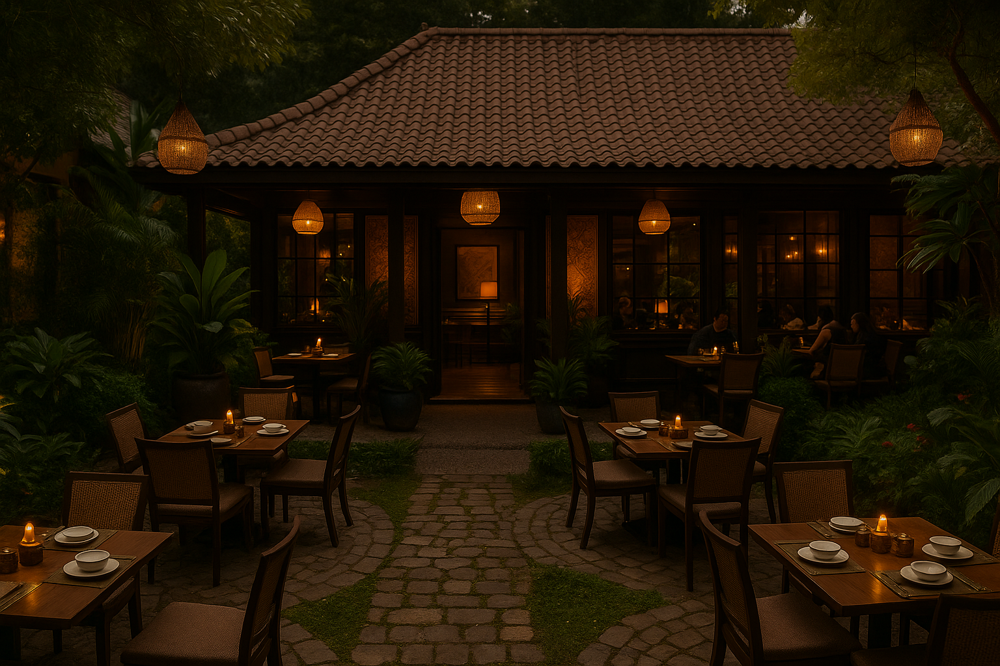

Our Story

Founded in 2023
"Kuliner" was born from a passion for authentic Indonesian flavors and a dream to bring the warmth of Indonesian hospitality to the world.
The name "Kuliner," which translates to "Cuisine," embodies our commitment to crafting traditional dishes with a modern touch, using only the freshest ingredients.
Our goal is to create not just a dining experience, but a journey through the rich tapestry of Indonesian culture, one plate at a time.